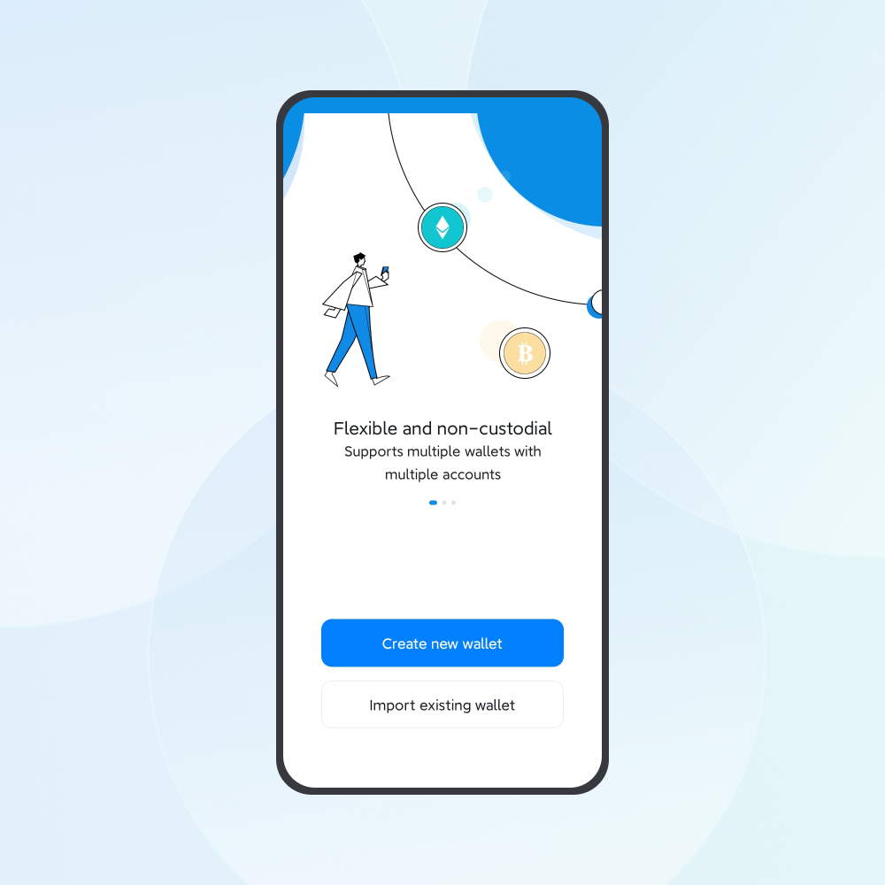

One of the features of imToken, a non-custodial wallet, is that users are the holders of their private key and mnemonic, having full control over their tokens. This also means that they are solely responsible for their tokens. In this case, they should be alert enough with adequate security knowledge to protect their wallets from losing, stealing, and scams.
Tips to Protect Your Wallet from Losing
As a non-custodial wallet, imToken does not hold users’ mnemonic. In other words, it cannot be retrieved once users lose their mnemonic. According to incomplete statistics, the most common cause for losing tokens is users failing to back up their mnemonic properly, rather than being stolen.
Given that, the most important step to protect these tokens is to back up the mnemonic carefully. In this way, users can download imToken again and retrieve their tokens through the mnemonic if they run into unexpected scenarios such as losing their smartphone or uninstalling imToken accidentally.
When you back up your wallet, please write down the corresponding mnemonic clearly and accurately (private key and keystore are also acceptable, but the mnemonic is the most recommended option). On top of that, it is best to store the mnemonic through physical media, including writing it down on paper or storing the mnemonic through the imKey mnemonic secret box.
Be sure to cross-check the mnemonic immediately after backing up to ensure its correctness.
How to Cross-Check Your Mnemonic?
1. Back up the mnemonic clearly and accurately when you create a wallet.
2. Note down the address of an account under the wallet, taking the ETH account address as an example (at least the first and the last eight characters).
3. Click "My Profile" - "Manage wallets", click the wallet that needs to be verified in the wallet list, click "Remove", enter the wallet password to remove the wallet.
4. Reimport wallet
- After removing the wallet, you will return to the page below if you only have one wallet.Click "Import Existing Wallet" and enter the wallet mnemonic to recover your wallet.

- If you have multiple wallets, after removing the wallet, click the "+Add Wallet" button below, click "Import existing wallets", select "Mnemonic" in the import method, enter the backup mnemonic phrase.
Check whether the ETH account address after importing is the same with the one recorded previously. Please carefully keep the correct mnemonic if the address is exactly the one noted down previously.
Learn More:
- How to Export or Backup the Mnemonic of an imToken Wallet?
- Why Is It so Important to Backup Mnemonic Phrases?
Tips to Protect Your Wallet from Stealing
Mnemonic represents the ownership of the tokens you own on the blockchain. Once someone else has access to your mnemonic, they can import your wallet on another device and set a different password to steal your tokens.
Therefore, to protect your tokens from stealing, the most important step is to make sure that the imToken App downloaded is from its official website. Apart from that, you should protect the wallet backup carefully without exposing the mnemonic and private key to others. Here are 10 tips concluded by imToken to guard against stealing. Please bear these tips in mind for your token security.
- Don’t download imToken from non-official sources. Please go to https://token.im to download it.
- Don’t save the mnemonic or private key through WeChat Favorites, memorandum, or email.
- Don’t save the mnemonic or private key in computer files, cloud drives, or USB flash drives.
- Don’t save the mnemonic or private key in screenshots or photos.
- Don’t send the mnemonic or private key through email, WeChat, or QQ.
- Don’t tell the mnemonic or private key to people around you.
- Don’t use Apple ID provided by others.
- Don’t import the mnemonic or private key to unknown third-party websites.
- Don’t use risky third-party wallets.
- Don’t copy-paste the mnemonic or private key.
Learn More:
- How to download imToken safely?
- How to identify the official imToken website and download links
- How to verify the authenticity of the imToken App
Tips to Protect Your Wallet from Scams
Scammers can always come up with new methods to carry out a fraud so that those who aren’t vigilant enough will be cheated for their mnemonic or token transfer authorization, leading to token stealing.
Thus, to protect your wallet against scams, the most important thing is to know about common frauds to raise your alertness. Here are some common types of scam summarized by imToken.
-
Transfer Authorization Scam
Scammers usually give you a QR code or offer you a very good investment opportunity to trick you into giving him the transfer authorization. -
Pyramid or Ponzi Scheme
In a pyramid scheme, users will be tricked to transfer their tokens to a so-called decentralized platform offering high yields and claiming that it has partnered with imToken. -
Over-The-Counter (OTC) Trading and Arbitrage Scam
Scammers set up a Telegram group and lied to users that they could exchange ETH for other tokens in a certain ratio, tricking users into transferring their tokens to the scammer's address and returning the users fake tokens. -
Exchange Customer Service Scam
Scammers impersonate as exchange officials and lie to users that their accounts are suspected of black money trading, luring users to download imToken via a shared screen and secretly note down the user's mnemonic and then steals the tokens. -
Fake App Scam
Scammers purchased search terms and Ad space on Google and lure users into downloading fake Apps on phishing sites to steal their tokens. -
Fake Airdrop Scams
Scammers airdrop tokens to a user’s wallet address to lure him with deceptive information in these tokens to enter third-party DApps for swapping tokens. In fact, he is cheated for his token transfer authorization. -
Scams Carried out by Impersonating imToken Officials
The impersonated imToken officials will ask users for their mnemonic and private key to steal tokens, in the name of solving problems for them.
Scammers always take advantage of users’ greed to get the trick to work. Please remain alert and vigilant to prevent yourself from being cheated while participating in blockchain investment.
If you recognize any suspicious activities such as pyramid schemes and fake apps, you can report to us via [email protected] to help more users avoid being deceived.